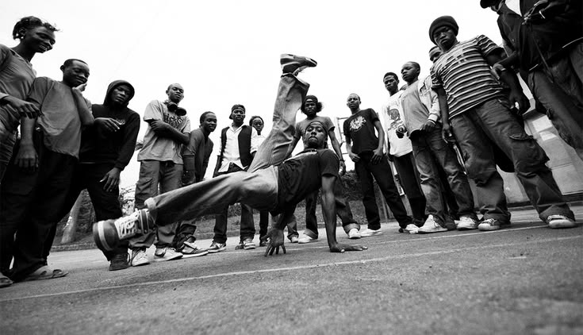

APIE MUS
Rhythm Pulse – tai šiuolaikiška šokių erdvė Vilniuje, skirta visiems, kurių širdis plaka vienu ritmu su muzika.
Mūsų studija gimė iš svajonės sukurti gyvą aplinką, kurioje sostinės šokių kultūra įgautų naują pagreitį, o kiekvienas atėjęs galėtų atskleisti savo potencialą, patobulinti įgūdžius bei suformuoti unikalų judesio braižą.
Tvirtai tikime, kad šokis yra kur kas daugiau nei tiesiog išmokti žingsneliai ar įsiminta choreografija. Rhythm Pulse studijoje mes keliame į pirmą vietą improvizaciją, muzikalumą, saviraiškos laisvę ir bendruomeniškumą.
Mūsų tikslas – užtikrinti, kad tiek žengiantis pirmuosius žingsnius, tiek patyręs šokėjas čia jaustųsi įkvėptas ir atradęs savo vietą.
Rhythm Pulse – tai traukos centras Vilniuje, kur susijungia skirtingi stiliai, asmenybės ir viena bendra aistra judesiui. Tapk mūsų bendruomenės dalimi ir pajusk savo ritmą kartu su mumis!
PASLAUGOS
